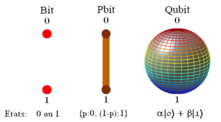
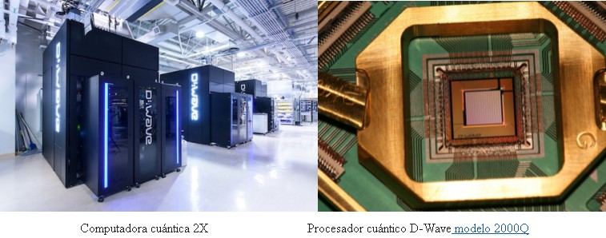

La idea nació en 1900 con el físico alemán Plank, él introdujo la teoría de que la energía o luz puede ser dividida en un número finito de “cuantos de energía”. La luz no es una onda continua sino que, está dividida en pequeños paquetes o cuantos. A partir de esto, otros físicos desarrollaron más teorías y conclusiones de las cuales nos interesan dos: la superposición de estados y el entrelazamiento.
En una pc clásica, la unidad básica de información es el bit, que puede tener dos estados posibles “1” o “0” y con ellos podemos realizar operaciones lógicas “AND”, “NOT”, “OR”.
Entonces con N bits podemos representar números y operar, pero con limitaciones. solo podemos representar 2^N estados distintos, y si queremos cambiar x bits tenemos que realizar al menos x operaciones sobre ellos, es decir que no podemos cambiarlos sin tocarlos.
La superposición y el entrelazamiento nos permiten reducir esas limitaciones: con la superposición podemos almacenar muchos más que solo 2^N estados. con N bits cuánticos (qubits), más el entrelazamiento mantiene fijas ciertas relaciones entre qubits de tal forma que las operaciones en un solo qubit afectan forzosamente al resto.
La superposición tiene su contraparte, ya que un qubit no vale solo 1 o 0, sino que puede ser un 1 en un 80% y un 0 en un 20%. lo que hace del qubit un objeto extremadamente difícil de medir, ya que cuando lo leemos solo podemos hacerlo en “1” o “0”, y las probabilidades que tenía cada valor de salir se pierden porque al medirlo lo hemos modificado.
La teoría del entrelazamiento, desprende dos algoritmos que fueron fundamentales para llevar los qubits del concepto a la aplicación. El temple cuántico utilizado en inteligencia artificial y aprendizaje automático,y el segundo algoritmo, el algoritmo de Shor, sirve para descomponer un número en sus factores primos de manera más eficiente de lo que lo lograría hacer un ordenador normal. Esta técnica es la más utilizada para proteger y cifrar datos en internet, pero este proceso en una computadora binaria es muy lento, lo cual, un ordenador cuántico con suficientes qubits dejaría completamente obsoleto el sistema de cifrado actual.
Ahora bien, en 1998 se presentó el primer ordenador cuántico, este solo tenía dos qubits y recién en el 2001 se ejecutó por primera vez el algoritmo de Shor, en él. En 2007, la compañía D-Wave presentó su ordenador cuántico con 16 qubits. Ya en el 2019 la misma compañía presentó un nuevo ordenador cuántico de 2000 qubits. Los enormes avances en el campo llaman día a día la atención de nuevas empresas e inversores, algunas de estas son IBM, Amazon, Google, entre otras. Esto genera una competencia por la supremacía de esta nueva tecnología y, todo parece indicar que D-Wave lleva la delantera.
